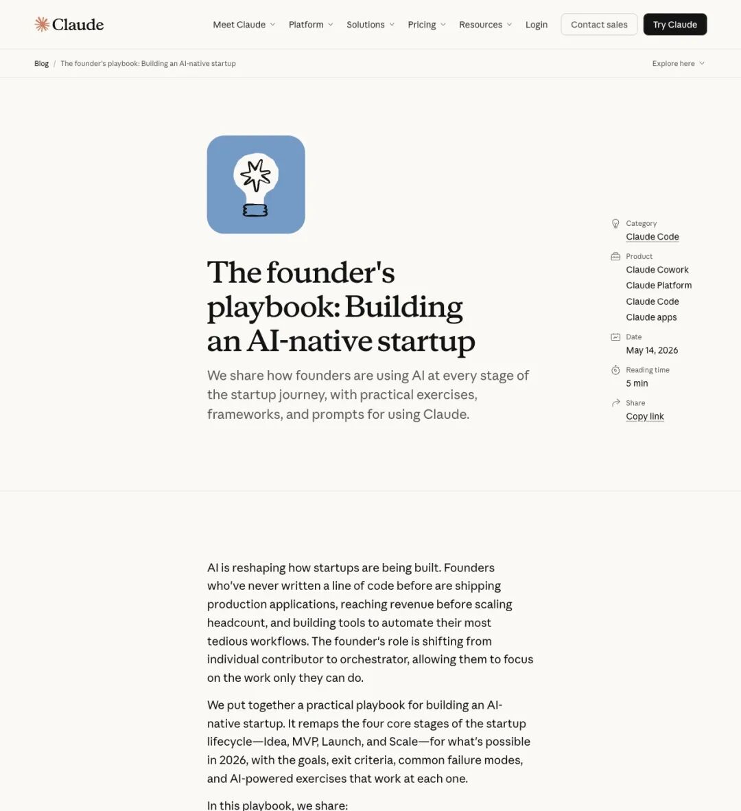
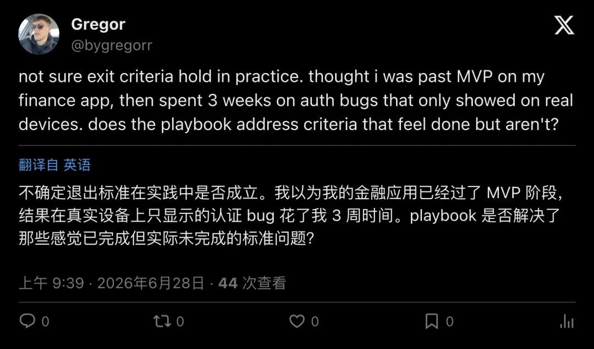
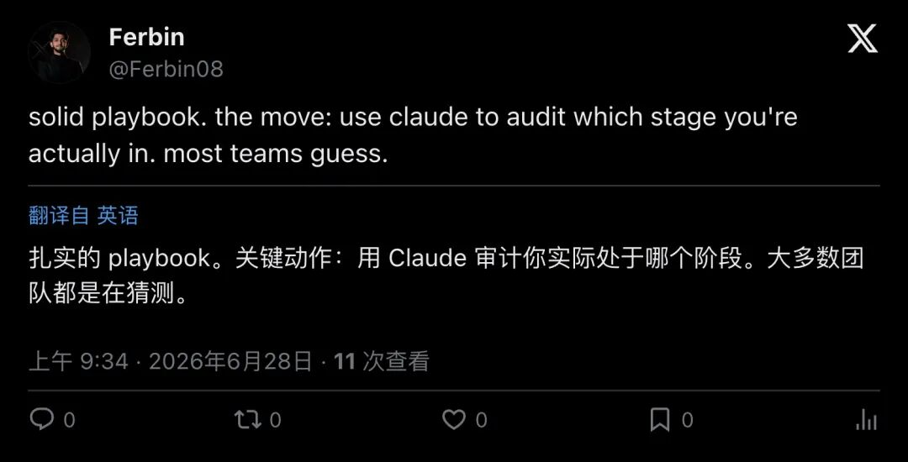
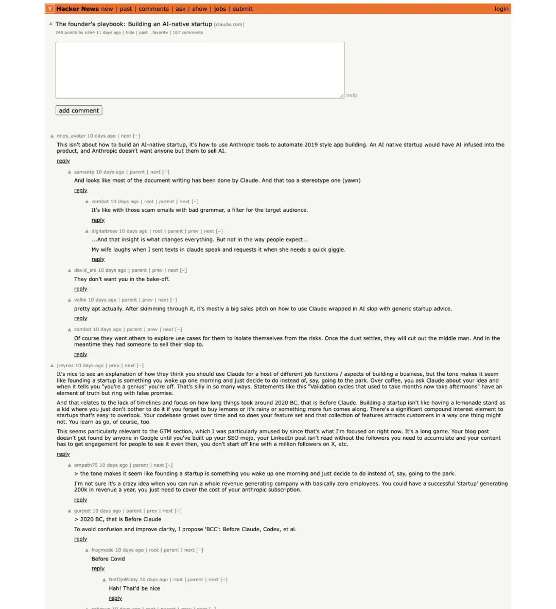

一份免费 PDF，在 Hacker News 上拿下 249 赞和 167 条评论。
一半人说它是 2026 年最实用的创业指南，另一半人直接骂它是「用 AI 写的 AI 推销手册」。
这份引发巨大争议的文件叫《The Founder's Playbook: Building an AI-Native Startup》，来自 Anthropic 官方。36 页，免费下载，号称把创业全流程拆成了四个阶段，每个阶段配目标、退出标准、失败模式和 Claude 练习题。
▲ CyrilXBT 在 X 上的帖子获得 160 赞、1.2 万次浏览，评价这份 playbook「读起来像操作系统」
X 用户 @cyrilXBT 用六个字总结了这份 PDF 的气质：
"This reads like an operating system, not a brochure."
「这读起来像操作系统，不像宣传册。」
到底是操作系统还是宣传册？得先看看它写了什么。
四个阶段，每步都有「及格线」

▲ Anthropic 官方博客页面，5 月 14 日发布，阅读时间约 5 分钟
Anthropic 把创业拆成了Idea → MVP → Launch → Scale四个阶段。这个框架本身不新鲜，YC 的课程讲了十年了。但这份 playbook 做了一件传统创业教程从来不做的事：给每个阶段画了退出标准。
Idea 阶段的退出标准是三个问题全部回答 yes：问题真实吗？方案击中了验证后暴露的真正痛点吗？有足够定性信号支撑继续？答不出来，就别往下走。
MVP 阶段更狠——你得拿出真实 PMF 证据：留存、收入、推荐，三选一。朋友捧场、投资人给面子、HN 首页带来的一波流量，统统不算。
Launch 阶段要求增长可重复、基础设施可扛住生产流量、运营流程不再依赖创始人亲力亲为。
Scale 阶段的终极检验：如果大厂今天抄你的产品，用户还会留下来吗？
这套「及格线」逻辑，是整份 PDF 最有价值的设计。因为 AI 时代创业最大的陷阱，恰恰藏在这些阶段的交界处。
AI 让造东西太容易了，于是每个人都在骗自己
Playbook 用了大量篇幅讲失败模式——每个阶段创始人最容易犯的错。读完之后你会发现，这些陷阱几乎都指向同一个根源：AI 把执行门槛压到了接近零，但判断力的门槛一点没降。
Idea 阶段最经典的坑：创始人花半天用 Claude Code 搭了个能跑的原型，截图发朋友圈，收到一堆「太厉害了」，然后认为自己已经完成了验证。Playbook 的原话是——把「做出原型」误认为验证，是 AI 时代最常见的自欺。
更阴险的是确认偏误被 AI 放大。你问 Claude「帮我论证这个方向为什么可行」，它真的能给你写出逻辑自洽、数据详实的分析报告。但这份报告的数据全是它替你挑选的，结论全是你暗示它的。Playbook 专门建议：在 Idea 阶段，要求 Claude 找 disconfirming evidence，让它反驳你自己。
到了 MVP 阶段，新的毒药出现了——zero-friction scope creep。加功能太容易了。用户随口提一个需求，十分钟就能加上。三个月后你的 MVP 变成了一个臃肿的怪物，什么都做，什么都不精。
还有一个被很多人忽略的隐患：agentic technical debt。用 Claude Code 写出来的代码能跑，但如果你没有维护 CLAUDE.md（架构上下文文件），每次新会话 AI 都从零推断项目结构。代码库在每次对话间隐性漂移，几个月后你连自己的产品长什么样都说不清了。
退出标准到底靠不靠谱？一个开发者的真实教训
Playbook 最被争议的部分就是退出标准。理论上很美：达标了就进下一阶段，没达标就别动。但实操呢？

▲ 开发者 Gregor 在 X 上分享亲身经历：以为过了 MVP 阶段，结果真实设备上的认证 bug 花了三周才修好
开发者 @bygregorr 分享了自己的经历：
"not sure exit criteria hold in practice. thought i was past MVP on my finance app, then spent 3 weeks on auth bugs that only showed on real devices."
「不确定退出标准在实践中是否成立。我以为我的金融应用已经过了 MVP 阶段，结果在真实设备上才显示的认证 bug 花了我三周。」
这个反馈打中了一个要害：退出标准是给创始人自查用的，但创始人恰恰最不擅长客观评估自己。你觉得「问题真实且具体」，可能只是因为你太想让它真实。你觉得「有足够定性信号」，可能只是因为你选择性忽略了负面反馈。
另一位用户 @Ferbin08 给出了一个更实用的建议：

▲ Ferbin 建议：用 Claude 审计你实际处于哪个阶段，大多数团队都只是在猜
"solid playbook. the move: use claude to audit which stage you're actually in. most teams guess."
「扎实的 playbook。关键动作：用 Claude 审计你实际处于哪个阶段。大多数团队都在猜。」
用 AI 审计自己——这可能是整份 playbook 里最被低估的一条建议。
HN 吵翻了：到底是指南还是广告？

▲ Hacker News 上 249 赞、167 条评论，社区对这份 playbook 的态度严重分裂
Hacker News 上的讨论堪称极端分裂。
反对派的火力集中在几个点上。用户 mips_avatar 直接说：
"This isn't about how to build an AI native startup, it's how to use Anthropic tools to automate 2019 style app building."
「这跟怎么建 AI 原生公司没关系，这是教你怎么用 Anthropic 的工具去自动化 2019 年那种 app 开发。」
volkk 翻了一遍后总结：
"pretty apt actually. After skimming through it, it's mostly a big sales pitch on how to use Claude wrapped in AI slop with generic startup advice."
「翻了一遍，基本上就是把通用创业建议裹上 AI 包装纸，再塞进一个大号 Claude 推销信封里。」
更尖锐的批评来自 jreynar，他写了一长段论述：创业根本不像这份 playbook 描述的那么线性。没有人会在某天早上起床决定「好，今天开始验证假设」，再像通关游戏一样一关一关推进。GTM（go-to-market）靠的是长期积累的 SEO、社交资产和行业人脉，Claude 帮不了你。
但支持者也有自己的论点。empath75 反驳说：
"I'm not sure it's a crazy idea when you can run a whole revenue generating company with basically zero employees."
「当你能用接近零雇员运营一家有收入的公司时，这个想法未必疯狂。」
150 万用户的非技术创始人，和 22000 台手术的数据平台
抛开争论，Playbook 列举的案例确实有说服力。
Anything是一个招聘平台，创始人完全不会写代码。靠 Claude Code 和 Cowork，他从零搭建了完整产品，积累了 150 万用户，已经产生销售收入。AI agent 承担了全部的技术构建工作。
Carta Healthcare是一个临床数据抽象平台，每年处理 22,000 例手术病例。引入 Claude 后，数据抽象时间减少了66%。
YC 孵化的HumanLayer、Ambral、Vulcan Technologies都在各自批次中用 Claude Code 将原型快速推进到可以向客户收费的阶段。
这些案例传递的信息很清晰：AI 确实能让创业的「造东西」环节大幅提速。但 Playbook 自己也承认——光会 prompt 远远不够。真正的护城河在于把你的领域知识外化：行业里的监管雷区、边缘 case、客户的隐性需求，这些东西要变成 Claude 的持久 context 和自动化测试用例。别人可以抄你的产品，抄不走你对行业的深度理解。
Anthropic 在打什么算盘？
免费发一份 36 页 PDF，背后的逻辑并不复杂。
Anthropic 在做两件事：降低 Claude 的使用门槛和降低 Claude 的滥用风险。
前者好理解——越多人知道怎么用 Chat / Cowork / Code，越多人会成为付费用户。后者更微妙：如果创始人拿 Claude 乱造一堆垃圾产品，最后怪 AI 不好用，受损的是 Anthropic 的品牌。给一套方法论，告诉你什么时候该用什么工具、什么时候该停下来验证，实质上是在保护自己的口碑。
HN 上的 zombot 看穿了这一层：
"Of course they want others to explore use cases for them to isolate themselves from the risks."
「他们当然想让别人去探索用例，这样风险就隔离到用户那边了。」
但从另一个角度看，这种「卖铲子的人教你怎么挖矿」的策略对买铲子的人未必是坏事。你买了一把铲子，附赠一份地质勘探手册和一张常见塌方预警清单。铲子商赚了钱，你少踩了坑。双赢的前提是：你得知道手册里写的毕竟是卖铲子的人写的。
对中文创业者意味着什么？
这份 Playbook 在中文社区的反响其实比英文圈更热烈。知乎、CSDN、GitHub 上都出现了全文翻译，多个独立博客做了详细拆解。原因很简单：独立开发者、一人公司、垂直领域专家用 AI 建工具——这三个群体在中国的基数极其庞大。
一个做教育的老师、一个做采购的供应链专家、一个在医疗行业干了十年的资深从业者——他们从来不缺行业洞察，缺的是把洞察变成产品的技术能力。Claude Code 把这块拼图补上了。
但 Playbook 的警告同样适用于中国市场：如果所有人都按同一套框架做，最后拼的还是领域深度、用户关系和创始人判断力。工具平权之后，差异化只会更难，不会更容易。
那些觉得「有了 AI 就能躺赢」的人，建议认真读一下 Idea 阶段的失败模式清单。第一条就够清醒的：你以为你在验证，其实你只是在让 AI 替你自我安慰。